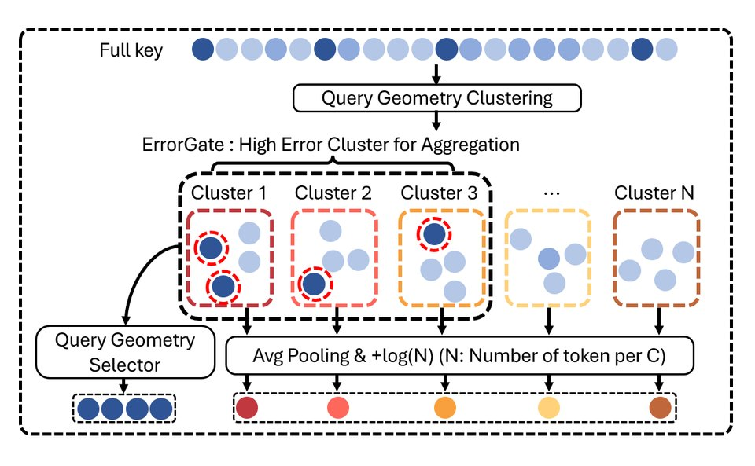

arXiv 2026
Hyunwoo Yu,
Jongbeom Lee,
Hyunbin Kim, Sungjun Park,
Jaemin Choi,
Jincheol Yang,
Seunghun Moon, Bongjoon Hyun, Kyomin Sohn,
Kyeongbo Kong,
Suk-Ju Kang
Sparse attention that folds the unread tail of the KV cache into a few count-aware cluster proxies, with an ErrorGate that spends the exact-read budget on the clusters with the largest estimated error. Keeps 99% of dense accuracy at a 1% read on RULER-32K HARD with Llama-3.1-8B, and its kernel runs decode attention 10× faster than dense at a 1% read.
ICML 2026 Workshop on Resource-Adaptive Foundation Model Inference (AdaptFM)
Hyunwoo Yu*,
Jongbeom Lee*,
Jaemin Choi*,
Jincheol Yang*,
Yubin Cho*, Joonsik Nam, Seunghun Moon, Jung-Woo Chang, Bongjoon Hyun, Kyomin Sohn,
Kyeongbo Kong,
Suk-Ju Kang†
Shows that the Top-K oracle used to evaluate sparse attention in video diffusion transformers cuts off the tail of the attention distribution, and proposes a low-delta oracle policy with Unified Tail Aggregation, which adds one aggregated logit to restore it. Up to 97.4% lower MSE than the Top-K oracle at 50% sparsity.